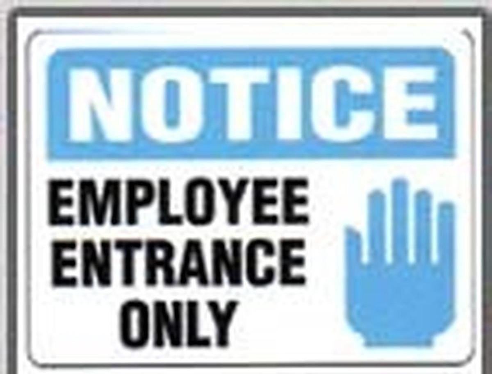
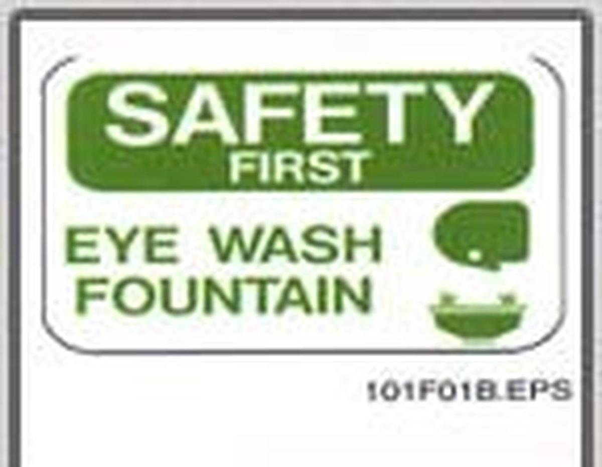
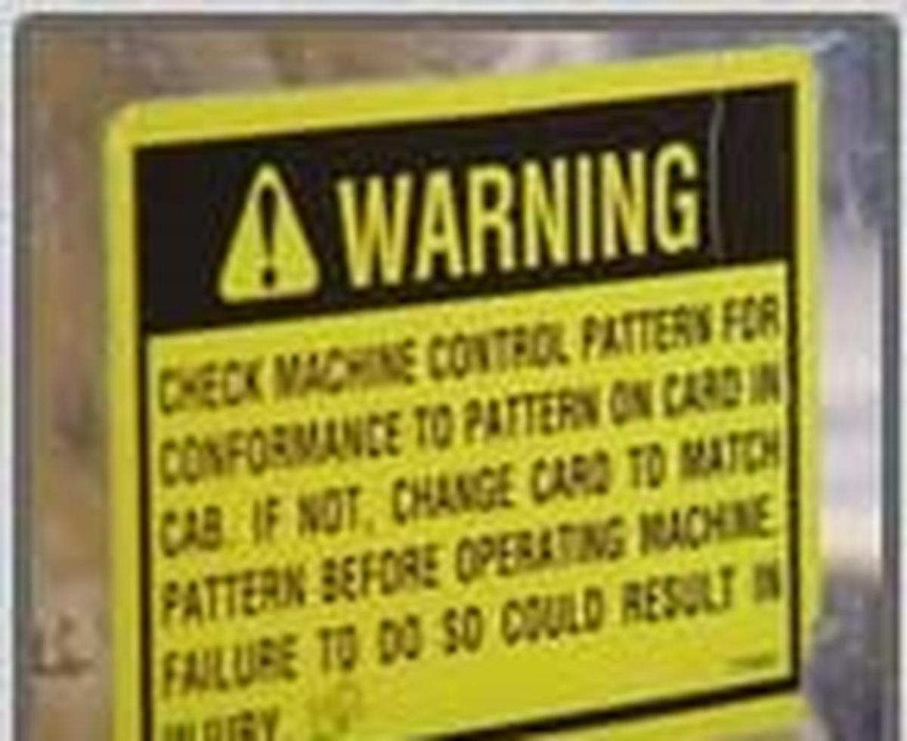
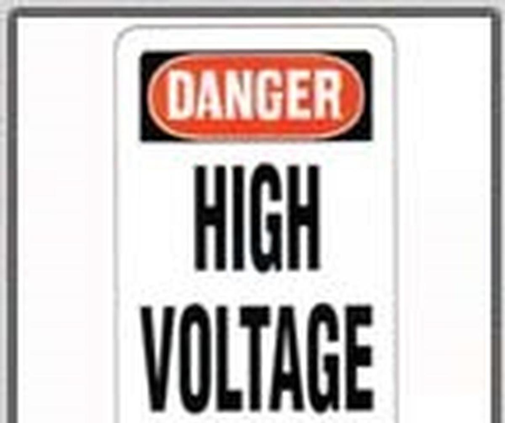

Azul, Blanco y Negro en los mas comunes encontramos: "No se admite", "No pase", "Exclusivo para empleados"

Verde y Blanco en los mas comunes encontramos: "Se requieren anteojos", "Rutas de evacuación", "Depósitos de material"

Amarillo y Negro en los mas comunes encontramos: "Láser que opera", "Prohibido Fumar", "Protección para los oidos"

Rojo, Blanco y Negro en los mas comunes encontramos: "Material inflamable", "Alto voltaje", "Líquidos combustibles"
Falta de señalamientos
Se utilizan diferentes formatos y colores para comunicar los diferentes niveles de seguridad, hay 4 tipos de señalamientos.
- Información (NOTICE)
- Seguridad (SAFETY FIRST)
- Precaución (CAUTION)
- Peligro (DANGER)
Reproduce el siguiente audio